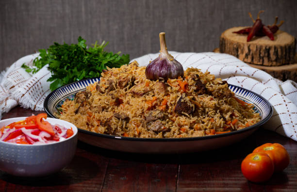

Pilau's Recipe

Description
Pilaf or pilau is a rice dish, or in some regions, a wheat dish, whose
recipe usually involves cooking in stock or broth, adding spices, and other ingredients such as vegetables or
meat, and employing some technique for achieving cooked grains that do not adhere to each
other.
At the time of the Abbasid Caliphate, such methods of cooking rice at first spread through a vast territory from
India to Spain, and eventually to a wider world. The Valencian (Spanish) paella, and the South Asian
pilau or pulao, and biryani ,evolved from such dishes.
Ingredients
- 2 medium size onions
- Ginger
- Garlic
- Pilau masala whole
- Powdered Pilau masala
- Soy sauce
- Beef
- Rice
- Cooking oil and Salt
- Tomato Paste
Steps
-
Start with boiling your beef for about 30minutes until its dry and has a golden brown shade.
-
After your beef is ready, shallow fry it with some little cooking oil. Then add in your grounded garlic then
ginger to add up some flavor.
-
Add tomato paste,or blended tomatoes to the beef. Then put in some pilau whole while stirring and some salt
to taste.
-
Add the rice into the beef and some little Soy sauce to add up the brown color, stir continuously then add
some pilau masala to generate the nice pilau smell.
-
Add enough water into the rice and beef mix (pilau). Close the sufuria with a lid to allow it to cook until
its ready.
Home